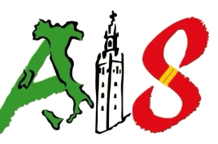

/es/la-asociacion/equipo — desktop 1440

La Asociación
Eventos
Ventajas socios
Guía práctica
Noticias
ES·IT
Hazte socio
Inicio / La Asociación / Equipo

La junta directiva
Seis personas elegidas en asamblea, todas voluntarias. Si quieres proponer algo, escribe a cualquiera de nosotros: contestamos.
Presidente
Nombre Apellido
En Sevilla desde 2011, de Nápoles. Coordina la Feria y la relación con el Ayuntamiento.
MR
Vicepresidenta
Nombre Apellido
De Milán, en Sevilla desde 2016. Lleva los encuentros literarios.
Secretaria
Nombre Apellido
Actas, socios y el correo de info@. Si escribes, te contesta ella.
GT
Tesorero
Nombre Apellido
Cuentas, cuotas y las subvenciones. Publica el balance cada año.
Vocal de eventos
Nombre Apellido
Excursiones, cocina y AIS Bambini. Conduce la furgoneta.
CF
Vocal de comunicación
Nombre Apellido
Instagram, carteles y la newsletter. Hace las fotos de los eventos.
Cómo se elige la junta
La asamblea de socios elige los seis cargos cada dos años, en votación abierta. Cualquier socio puede presentarse. El procedimiento está en los estatutos, artículos 12 a 17.
Estatutos y transparencia
Además de la junta, somos muchos
La asociación se mueve gracias a las personas que echan una mano en cada evento. Hay tres puestos abiertos ahora mismo.
Ver cómo colaborar
© 2026 Asociación Italiani a Siviglia · info@italianiasiviglia.com
/es/colabora — desktop 1440
La Asociación
Eventos
Ventajas socios
Guía práctica
Noticias
ES·IT
Hazte socio
Inicio / Colabora
La asociación se mueve gracias a voluntarios
No hace falta compromiso eterno ni experiencia. Basta con tiempo, ganas y avisar de qué te apetece hacer.
Todas las áreas · 3
Eventos
Comunicación
AIS Bambini
Junta directiva
Voluntariado
Nuevo
Coordinador/a de eventos
Dedicación
4–6 h/semana, flexible
Llevar el calendario de un mes a otro: proponer, reservar, coordinar con los ponentes y estar el día del evento.
Sevilla · presencial y remoto
Italiano y español
Ver más
Voluntariado
Responsable de redes sociales
Dedicación
2–3 h/semana, remoto
Mantener viva la cuenta de Instagram y la de Facebook: calendario de publicaciones, carteles y stories de los eventos.
Remoto
Italiano y español
Ver más
Voluntariado
Monitor/a AIS Bambini
Dedicación
1 sábado al mes
Preparar y dinamizar las actividades en italiano para los niños de las familias socias.
Sevilla · presencial
Italiano
Ver más
Junta directiva
Cubierto
Tesorero/a
Dedicación
Cargo de la junta, mandato de 2 años
Cargo cubierto. Se renueva en la próxima asamblea.
Ver más
© 2026 Asociación Italiani a Siviglia · info@italianiasiviglia.com
/es/colabora — estado vacío (sin vacantes)
La AsociaciónEventosVentajas sociosGuía prácticaNoticias
ES·IT
Hazte socio
La asociación se mueve gracias a voluntarios
No hace falta compromiso eterno ni experiencia. Basta con tiempo, ganas y avisar de qué te apetece hacer.
Ahora mismo no hay vacantes abiertas
Pero siempre hay algo que hacer: montar, traducir, hacer fotos, llevar sillas. Escríbenos y te decimos qué hace falta este mes.
Escríbenos
Avísame de nuevas vacantes
© 2026 Asociación Italiani a Siviglia · info@italianiasiviglia.com